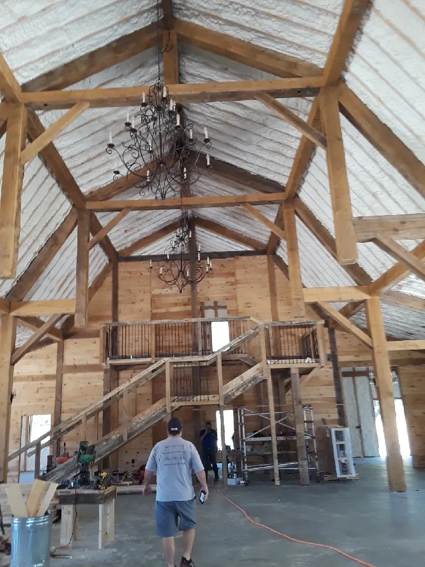
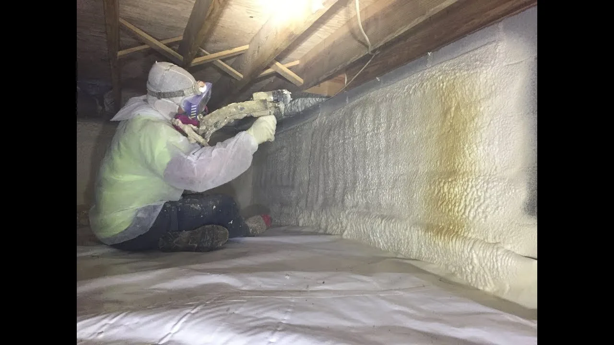
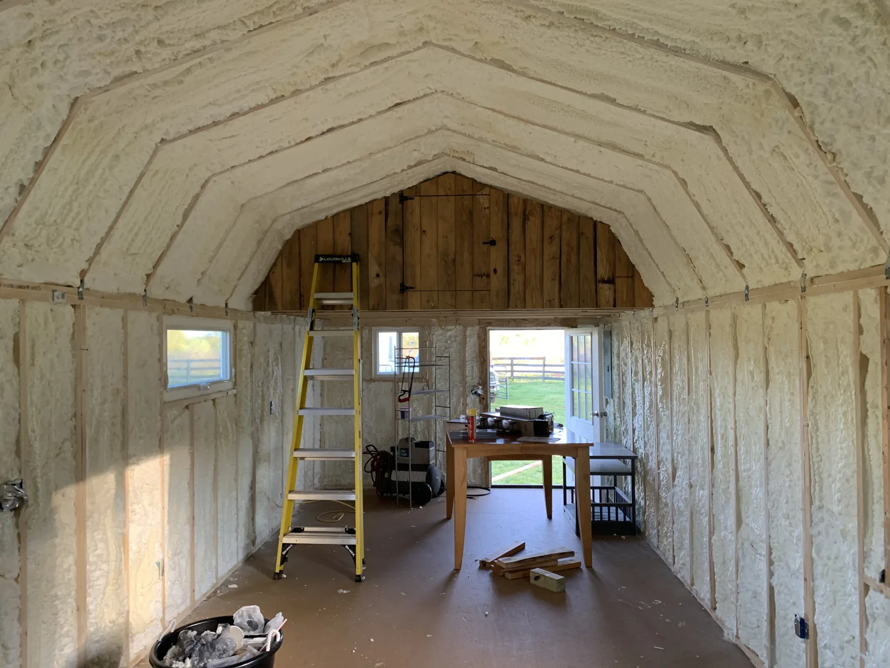

Tell us about the project.
Include what you are building or what is not working, along with the project location.
PROJECT GALLERY
Look inside framed homes, a metal building and a crawlspace. These photos show the areas being sprayed and the insulation before finishes go on.
BLUE STAR PROJECT PHOTOS
Notice where the insulation meets the framing, how the roof changes direction and how much room the installer has to work.






FROM REFERENCE PHOTO TO PROJECT REVIEW
A photograph can show access, framing and visible conditions. Plans, a rough area or a short description can add context, but you do not need all of them to begin.
Include what you are building or what is not working, along with the project location.
Add plans or photos, enter an approximate surface area, or begin with a description alone.
We review which surfaces may need insulation and ask about any missing details. If the job is ready to quote, we can prepare a written scope and price.